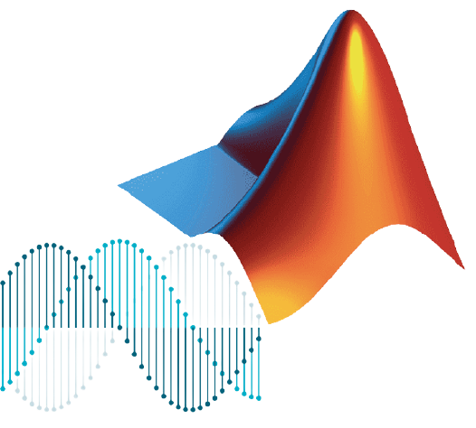

I'm Stelios
a communications engineer.


I am Stelios Kyriakou and I graduated first of my class with the degree of Electrical and Computer Engineering.
At the moment I am on my 3rd semester of my MSc in Communications Engineering at the RWTH Aachen Univerity.
Welcome to my personal webpage where I would like to show my work experience and skills.

The C programming language was the first programming language that I ever learned to code. Its fair to say that I can code on an intermediate to advanced level since I had practical experience throughout my studies, during which I had successfully finished various lab courses including 2 programming courses with C during my Bachelor and a Network Programming lab during my Master studies.
In my current semester I am taking the Laboratory of Matlab Advanced: for Signal Processing.
My first experience with Python was during an Internship in my Bachelor studies, where I participated in an ongoing project regarding a Low cost and Real-time Monitoring of a Laboratory Scale Power System (see below).
This semester I am taking a Machine Learning course and as we cover the lecture materials I am doing an Online course in Udemy called: Machine Learning A-Z: Hands on Python in Data Science in order for me to get more practical experience on it.
This course includes tutorials of all core algorithms and principles of ML like:
Coding in HTML and CSS is more like a personal hobby of mine. In order to show my skills on HTML and CSS I created my Personal Webpage. This will also highlight my most essential technical skills and experiences in more detail.
September 2019 - March 2020 RWTH Aachen University
Project Title: Basic Email Client based on SMTP and POP
During my first semester of my master studies at RWTH Aachen Univerity, I attended a network programming laboratory in which we worked on various assignments (echo server & client, http webserver using TCP, ipv4/ipv6, etc) in groups of 2. The final task we were assigned to was to create an Email Client for sending and receiving (text based) emails using the SMTP and POP3 protocols respectively while also using the TLS (transport layer security) protocol, which is required for communicating with Email Servers.
Functionalities of our Email Client are:
September 2017 - May 2018 University of Cyprus
Project Title: X-Band Signal Generation using an Opto-Electronic-Oscillator

During my final year of my bachelor studies I worked on implementing an Opto-Electronic-Oscillator (OEO) for generating ultra-high qiality x-band signals. OEOs are a unique type of RF feedback oscillators in which the resonator is replaced with an optical delay-line fibre carrying an intensity modulated laser beam. This implementation takes advantage of the fact that optical fibers offer low attenuation with flat frequency response over the modulated bandwidth as well as the long delays, thus OEOs can generate signals with high spectral purity. My work mainly focused on improving the quality of the generated signal by trying out defferent OEO topologies which acted as microwave-photonic filters. As a final result I managed to implement an OEO design with phase noise as low as -80dB at 10 khz offset frequency and an operating frequency of up to 10 GHz.
June 2016 - August 2016 University of Cyprus
Participated in the internship at KIOS research center after being accepted by the UROP 2016 (Undergraduate Research Opportunities Program) at the end of my 2nd year of my bachelor studies
My tasks for this project included processing of data measured from external sensors and properly presenting them graphically through a graphical user interface (GUI) in Python.
June 2015 - July 2015 University of Cyprus
I took part in this Interhsip after finishing the 1st year of my Bachelor studies
In this project I was given weather forecast data and the corresponding power generated from a PV panel of a specified location. Then my task was to try to predict the power generated from the same PV Panel given fresh weather forecast data.
Dont hesitate to email me by clicking on the button below.
Thanks for stopping by!